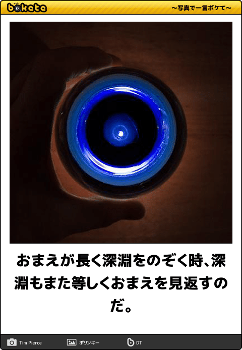

前回までのあらすじ
複雑怪奇なC++言語仕様との戦いに、聖典「Effective C++」を携え勝利を収めた勇者クリハラ。
だが倒した敵は四天王最弱だった
襲い来る C++11/14 軍団
迫りくる、人を殺す気マンマンとしか思えない 型推論(auto)、moveセマンティクス、そして lambda
「もうだめだっ！」と思ったその時、聖者スコット・メイヤーズは 新たなる聖典「Effective Modern C++」を与えたのだった
辛くも、C++11/14 を退けたクリハラ.やっと訪れた平穏な日々
――そんなクリハラの元に、新たな刺客の影が忍び寄るのであった
* おことわり
今回は時間もなかったし、キャッチアップもあまり出来ていない感じなので、
前回のような「マジかー、、、」という変態仕様を愛でる内容ではなく、
単純に C++1z の新機能を紹介する内容です。
* 主な機能
今回紹介する C++1z(C++17) の機能はこんな感じ
- fold式
- 軽量コンセプト
* fold 式
fold 式を語る前に、まずはおさらい。C++11 でサポートされたあたらしい構文。
>||
void g(int a) {
cout << "A:" << a << endl;
}
void g(int a, const string& b) {
cout << "A:" << a << " B:" << b << endl;
}
void g(int a, const string& b, bool c) {
cout << "A:" << a << " B:" << b << " C:" << c << endl;
}
template<class... Args>
void f(Args... args) {
g(args...);
}
int main(void) {
f(1);
f(42, "hogehoge");
f(33, "piyopiyo", false);
return 0;
}
||<
どういうコードだか分かるかな？(このコードはコンパイル通るよ!)
* fold 式 (2)
実行結果はこちら
>||
A:1
A:42 B:hogehoge
A:33 B:piyopiyo C:0
||<
C++11では可変引数テンプレートがサポートされました。
上記コードは f(Args... args) が f(int) , f(int, string), f(int, string, bool) にインスタンス化され、オーバーロードされた g(int), g(int, string), g(int, string, bool) の適切なものがコールされるというもの。
- template や void f(Args... args) での Args と args をパラメータパックと言う
- パラメータパックは複数のパラメータがまとまった状態になっている
- パラメータパックの宣言、及びに展開には ... を使用する
引数の個数と型もパラメタライズされてしまうという、結構リッチな機能。
* fold 式 (3)
ただ、たとえば sum を求めたりの、本当に可変長の処理を書くには、テンプレートの再帰しか方法がありません。
>||
int sum() {return 0;}
template<typename T>
auto sum(T&& t) {return t;}
template<typename T, typename ...Args>
auto sum(T&& t, Args&& ...args) {
return t + sum(args ...);
}
int main(void) {
cout << "A:" << sum(1,2,3) << endl;
cout << "B:" << sum(1,2,3,4,5) << endl;
cout << "C:" << sum(1,2,3,4,5,6,7,8,9,10) << endl;
return 0;
}
||<
ここにいる人には親和性の高そうなコードですが、しかしめんどくさい。
* fold 式 (4)
そこで登場したのが fold式。末尾再帰といえばfoldだよね!
（foldについては飯田さんの発表で見てるはずなので、みんな分かるはず）
>||
template<typename ...Args>
auto sum(Args&& ...args) {
return (... + args);
}
int main(void) {
cout << "A:" << sum(1,2,3) << endl;
cout << "B:" << sum(1,2,3,4,5) << endl;
cout << "C:" << sum(1,2,3,4,5,6,7,8,9,10) << endl;
return 0;
}
||<
すっごいシンプルになりました！……ですが、どこがfold式でしょう？
fold 式 (5)
正解は
(... + args)
でした。（この期に及んで新たなprimary-expressionが追加されたよ！）
* fold 式 (6)
fold 式は パラメータパックを任意の演算子でfoldします。以下のような感じです。
>||
(args + ...);
// arg1 + (arg2 + (arg3 + arg4)); // right-fold
(... + args);
// ( (arg1 + arg2) + arg3) + arg4; // left-fold
(args + ... + 42);
// arg1 + (arg2 + (arg3 + (arg4 + 42)));
(42 + ... + args);
// ( ( (42 + arg1) + arg2) + arg3) + arg4;
||<
一番外側の () は省略できません（シンタックスエラーを回避できないので)
残念なのは、fold式が対応するのは以下の演算子のみだということ。
>||
+ - * / % ^ & | ~ = < > << >>
+= -= *= /= %= ^= &= |= <<= >>=
== != <= >= && || , .* ->*
||<
いつか、任意の関数で fold してみたいですね！（きっとその日は来るハズ、そう C++ だからね）
* concept(軽量)
その前におさらい。
C++14から **変数テンプレート** が追加されました
>||
template < typename T >
constexpr T pi = static_cast(3.141592) ;
int x = pi ;
double y = pi ;
||<
* concept(軽量)
まずはこんなコードを動かしてみよう
>||
template
auto square(T i) {
return i * i;
}
struct X{};
int main() {
int a = 3;
struct X b;
cout << square(a) << endl;
cout << square(b) << endl;
return 0;
}
||<
これをコンパイルするとどうなるかな？
* ほんとうにありがとうございましたっ！
こうなります。
>||
$ g++ -std=c++14 main4.cpp
main4.cpp: In function ‘int main()’:
main4.cpp:14:21: error: ‘square’ was not declared in this scope
cout << square(a) << endl;
^
keijuterazono@LR-25:~/cpp1z$ emacs
(emacs:3744): Gtk-CRITICAL **: gtk_distribute_natural_allocation: assertion 'extra_space >= 0' failed
keijuterazono@LR-25:~/cpp1z$ g++ -std=c++14 main4.cpp
main4.cpp: In instantiation of ‘auto square(T) [with T = X]’:
main4.cpp:15:21: required from here
main4.cpp:6:14: error: no match for ‘operator*’ (operand types are ‘X’ and ‘X’)
return i * i;
^
main4.cpp: In function ‘int main()’:
main4.cpp:15:10: error: no match for ‘operator<<’ (operand types are ‘std::ostream {aka std::basic_ostream<char>}’ and ‘void’)
cout << square(b) << endl;
^
In file included from /usr/include/c++/5/iostream:39:0,
from main4.cpp:1:
/usr/include/c++/5/ostream:108:7: note: candidate: std::basic_ostream<_CharT, _Traits>::__ostream_type& std::basic_ostream<_CharT, _Traits>::operator<<(std::basic_ostream<_CharT, _Traits>::__ostream_type& (*)(std::basic_ostream<_CharT, _Traits>::__ostream_type&)) [with _CharT = char; _Traits = std::char_traits<char>; std::basic_ostream<_CharT, _Traits>::__ostream_type = std::basic_ostream<char>]
operator<<(__ostream_type& (*__pf)(__ostream_type&))
^
/usr/include/c++/5/ostream:108:7: note: no known conversion for argument 1 from ‘void’ to ‘std::basic_ostream<char>::__ostream_type& (*)(std::basic_ostream<char>::__ostream_type&) {aka std::basic_ostream<char>& (*)(std::basic_ostream<char>&)}’
/usr/include/c++/5/ostream:117:7: note: candidate: std::basic_ostream<_CharT, _Traits>::__ostream_type& std::basic_ostream<_CharT, _Traits>::operator<<(std::basic_ostream<_CharT, _Traits>::__ios_type& (*)(std::basic_ostream<_CharT, _Traits>::__ios_type&)) [with _CharT = char; _Traits = std::char_traits<char>; std::basic_ostream<_CharT, _Traits>::__ostream_type = std::basic_ostream<char>; std::basic_ostream<_CharT, _Traits>::__ios_type = std::basic_ios<char>]
operator<<(__ios_type& (*__pf)(__ios_type&))
^
/usr/include/c++/5/ostream:117:7: note: no known conversion for argument 1 from ‘void’ to ‘std::basic_ostream<char>::__ios_type& (*)(std::basic_ostream<char>::__ios_type&) {aka std::basic_ios<char>& (*)(std::basic_ios<char>&)}’
/usr/include/c++/5/ostream:127:7: note: candidate: std::basic_ostream<_CharT, _Traits>::__ostream_type& std::basic_ostream<_CharT, _Traits>::operator<<(std::ios_base& (*)(std::ios_base&)) [with _CharT = char; _Traits = std::char_traits<char>; std::basic_ostream<_CharT, _Traits>::__ostream_type = std::basic_ostream<char>]
operator<<(ios_base& (*__pf) (ios_base&))
^
/usr/include/c++/5/ostream:127:7: note: no known conversion for argument 1 from ‘void’ to ‘std::ios_base& (*)(std::ios_base&)’
/usr/include/c++/5/ostream:166:7: note: candidate: std::basic_ostream<_CharT, _Traits>::__ostream_type& std::basic_ostream<_CharT, _Traits>::operator<<(long int) [with _CharT = char; _Traits = std::char_traits<char>; std::basic_ostream<_CharT, _Traits>::__ostream_type = std::basic_ostream<char>]
operator<<(long __n)
^
/usr/include/c++/5/ostream:166:7: note: no known conversion for argument 1 from ‘void’ to ‘long int’
/usr/include/c++/5/ostream:170:7: note: candidate: std::basic_ostream<_CharT, _Traits>::__ostream_type& std::basic_ostream<_CharT, _Traits>::operator<<(long unsigned int) [with _CharT = char; _Traits = std::char_traits<char>; std::basic_ostream<_CharT, _Traits>::__ostream_type = std::basic_ostream<char>]
operator<<(unsigned long __n)
^
/usr/include/c++/5/ostream:170:7: note: no known conversion for argument 1 from ‘void’ to ‘long unsigned int’
/usr/include/c++/5/ostream:174:7: note: candidate: std::basic_ostream<_CharT, _Traits>::__ostream_type& std::basic_ostream<_CharT, _Traits>::operator<<(bool) [with _CharT = char; _Traits = std::char_traits<char>; std::basic_ostream<_CharT, _Traits>::__ostream_type = std::basic_ostream<char>]
operator<<(bool __n)
^
/usr/include/c++/5/ostream:174:7: note: no known conversion for argument 1 from ‘void’ to ‘bool’
In file included from /usr/include/c++/5/ostream:638:0,
from /usr/include/c++/5/iostream:39,
from main4.cpp:1:
/usr/include/c++/5/bits/ostream.tcc:91:5: note: candidate: std::basic_ostream<_CharT, _Traits>& std::basic_ostream<_CharT, _Traits>::operator<<(short int) [with _CharT = char; _Traits = std::char_traits<char>]
basic_ostream<_CharT, _Traits>::
^
/usr/include/c++/5/bits/ostream.tcc:91:5: note: no known conversion for argument 1 from ‘void’ to ‘short int’
In file included from /usr/include/c++/5/iostream:39:0,
from main4.cpp:1:
/usr/include/c++/5/ostream:181:7: note: candidate: std::basic_ostream<_CharT, _Traits>::__ostream_type& std::basic_ostream<_CharT, _Traits>::operator<<(short unsigned int) [with _CharT = char; _Traits = std::char_traits<char>; std::basic_ostream<_CharT, _Traits>::__ostream_type = std::basic_ostream<char>]
operator<<(unsigned short __n)
^
/usr/include/c++/5/ostream:181:7: note: no known conversion for argument 1 from ‘void’ to ‘short unsigned int’
In file included from /usr/include/c++/5/ostream:638:0,
from /usr/include/c++/5/iostream:39,
from main4.cpp:1:
/usr/include/c++/5/bits/ostream.tcc:105:5: note: candidate: std::basic_ostream<_CharT, _Traits>& std::basic_ostream<_CharT, _Traits>::operator<<(int) [with _CharT = char; _Traits = std::char_traits<char>]
basic_ostream<_CharT, _Traits>::
^
/usr/include/c++/5/bits/ostream.tcc:105:5: note: no known conversion for argument 1 from ‘void’ to ‘int’
In file included from /usr/include/c++/5/iostream:39:0,
from main4.cpp:1:
/usr/include/c++/5/ostream:192:7: note: candidate: std::basic_ostream<_CharT, _Traits>::__ostream_type& std::basic_ostream<_CharT, _Traits>::operator<<(unsigned int) [with _CharT = char; _Traits = std::char_traits<char>; std::basic_ostream<_CharT, _Traits>::__ostream_type = std::basic_ostream<char>]
operator<<(unsigned int __n)
^
/usr/include/c++/5/ostream:192:7: note: no known conversion for argument 1 from ‘void’ to ‘unsigned int’
/usr/include/c++/5/ostream:201:7: note: candidate: std::basic_ostream<_CharT, _Traits>::__ostream_type& std::basic_ostream<_CharT, _Traits>::operator<<(long long int) [with _CharT = char; _Traits = std::char_traits<char>; std::basic_ostream<_CharT, _Traits>::__ostream_type = std::basic_ostream<char>]
operator<<(long long __n)
^
/usr/include/c++/5/ostream:201:7: note: no known conversion for argument 1 from ‘void’ to ‘long long int’
/usr/include/c++/5/ostream:205:7: note: candidate: std::basic_ostream<_CharT, _Traits>::__ostream_type& std::basic_ostream<_CharT, _Traits>::operator<<(long long unsigned int) [with _CharT = char; _Traits = std::char_traits<char>; std::basic_ostream<_CharT, _Traits>::__ostream_type = std::basic_ostream<char>]
operator<<(unsigned long long __n)
^
/usr/include/c++/5/ostream:205:7: note: no known conversion for argument 1 from ‘void’ to ‘long long unsigned int’
/usr/include/c++/5/ostream:220:7: note: candidate: std::basic_ostream<_CharT, _Traits>::__ostream_type& std::basic_ostream<_CharT, _Traits>::operator<<(double) [with _CharT = char; _Traits = std::char_traits<char>; std::basic_ostream<_CharT, _Traits>::__ostream_type = std::basic_ostream<char>]
operator<<(double __f)
^
/usr/include/c++/5/ostream:220:7: note: no known conversion for argument 1 from ‘void’ to ‘double’
/usr/include/c++/5/ostream:224:7: note: candidate: std::basic_ostream<_CharT, _Traits>::__ostream_type& std::basic_ostream<_CharT, _Traits>::operator<<(float) [with _CharT = char; _Traits = std::char_traits<char>; std::basic_ostream<_CharT, _Traits>::__ostream_type = std::basic_ostream<char>]
operator<<(float __f)
^
/usr/include/c++/5/ostream:224:7: note: no known conversion for argument 1 from ‘void’ to ‘float’
/usr/include/c++/5/ostream:232:7: note: candidate: std::basic_ostream<_CharT, _Traits>::__ostream_type& std::basic_ostream<_CharT, _Traits>::operator<<(long double) [with _CharT = char; _Traits = std::char_traits<char>; std::basic_ostream<_CharT, _Traits>::__ostream_type = std::basic_ostream<char>]
operator<<(long double __f)
^
/usr/include/c++/5/ostream:232:7: note: no known conversion for argument 1 from ‘void’ to ‘long double’
/usr/include/c++/5/ostream:245:7: note: candidate: std::basic_ostream<_CharT, _Traits>::__ostream_type& std::basic_ostream<_CharT, _Traits>::operator<<(const void*) [with _CharT = char; _Traits = std::char_traits<char>; std::basic_ostream<_CharT, _Traits>::__ostream_type = std::basic_ostream<char>]
operator<<(const void* __p)
^
/usr/include/c++/5/ostream:245:7: note: no known conversion for argument 1 from ‘void’ to ‘const void*’
In file included from /usr/include/c++/5/ostream:638:0,
from /usr/include/c++/5/iostream:39,
from main4.cpp:1:
/usr/include/c++/5/bits/ostream.tcc:119:5: note: candidate: std::basic_ostream<_CharT, _Traits>& std::basic_ostream<_CharT, _Traits>::operator<<(std::basic_ostream<_CharT, _Traits>::__streambuf_type*) [with _CharT = char; _Traits = std::char_traits<char>; std::basic_ostream<_CharT, _Traits>::__streambuf_type = std::basic_streambuf<char>]
basic_ostream<_CharT, _Traits>::
^
/usr/include/c++/5/bits/ostream.tcc:119:5: note: no known conversion for argument 1 from ‘void’ to ‘std::basic_ostream<char>::__streambuf_type* {aka std::basic_streambuf<char>*}’
In file included from /usr/include/c++/5/string:52:0,
from /usr/include/c++/5/bits/locale_classes.h:40,
from /usr/include/c++/5/bits/ios_base.h:41,
from /usr/include/c++/5/ios:42,
from /usr/include/c++/5/ostream:38,
from /usr/include/c++/5/iostream:39,
from main4.cpp:1:
/usr/include/c++/5/bits/basic_string.h:5172:5: note: candidate: template<class _CharT, class _Traits, class _Alloc> std::basic_ostream<_CharT, _Traits>& std::operator<<(std::basic_ostream<_CharT, _Traits>&, const std::__cxx11::basic_string<_CharT, _Traits, _Alloc>&)
operator<<(basic_ostream<_CharT, _Traits>& __os,
^
/usr/include/c++/5/bits/basic_string.h:5172:5: note: template argument deduction/substitution failed:
main4.cpp:15:21: note: mismatched types ‘const std::__cxx11::basic_string<_CharT, _Traits, _Alloc>’ and ‘void’
cout << square(b) << endl;
^
In file included from /usr/include/c++/5/bits/ios_base.h:46:0,
from /usr/include/c++/5/ios:42,
from /usr/include/c++/5/ostream:38,
from /usr/include/c++/5/iostream:39,
from main4.cpp:1:
/usr/include/c++/5/system_error:209:5: note: candidate: template<class _CharT, class _Traits> std::basic_ostream<_CharT, _Traits>& std::operator<<(std::basic_ostream<_CharT, _Traits>&, const std::error_code&)
operator<<(basic_ostream<_CharT, _Traits>& __os, const error_code& __e)
^
/usr/include/c++/5/system_error:209:5: note: template argument deduction/substitution failed:
main4.cpp:15:19: note: cannot convert ‘square<X>((b, X()))’ (type ‘void’) to type ‘const std::error_code&’
cout << square(b) << endl;
^
In file included from /usr/include/c++/5/iostream:39:0,
from main4.cpp:1:
/usr/include/c++/5/ostream:497:5: note: candidate: template<class _CharT, class _Traits> std::basic_ostream<_CharT, _Traits>& std::operator<<(std::basic_ostream<_CharT, _Traits>&, _CharT)
operator<<(basic_ostream<_CharT, _Traits>& __out, _CharT __c)
^
/usr/include/c++/5/ostream:497:5: note: template argument deduction/substitution failed:
main4.cpp:15:21: note: deduced conflicting types for parameter ‘_CharT’ (‘char’ and ‘void’)
cout << square(b) << endl;
^
In file included from /usr/include/c++/5/iostream:39:0,
from main4.cpp:1:
/usr/include/c++/5/ostream:502:5: note: candidate: template<class _CharT, class _Traits> std::basic_ostream<_CharT, _Traits>& std::operator<<(std::basic_ostream<_CharT, _Traits>&, char)
operator<<(basic_ostream<_CharT, _Traits>& __out, char __c)
^
/usr/include/c++/5/ostream:502:5: note: template argument deduction/substitution failed:
main4.cpp:15:19: note: cannot convert ‘square<X>((b, X()))’ (type ‘void’) to type ‘char’
cout << square(b) << endl;
^
In file included from /usr/include/c++/5/iostream:39:0,
from main4.cpp:1:
/usr/include/c++/5/ostream:508:5: note: candidate: template<class _Traits> std::basic_ostream<char, _Traits>& std::operator<<(std::basic_ostream<char, _Traits>&, char)
operator<<(basic_ostream<char, _Traits>& __out, char __c)
^
/usr/include/c++/5/ostream:508:5: note: template argument deduction/substitution failed:
main4.cpp:15:19: note: cannot convert ‘square<X>((b, X()))’ (type ‘void’) to type ‘char’
cout << square(b) << endl;
^
In file included from /usr/include/c++/5/iostream:39:0,
from main4.cpp:1:
/usr/include/c++/5/ostream:514:5: note: candidate: template<class _Traits> std::basic_ostream<char, _Traits>& std::operator<<(std::basic_ostream<char, _Traits>&, signed char)
operator<<(basic_ostream<char, _Traits>& __out, signed char __c)
^
/usr/include/c++/5/ostream:514:5: note: template argument deduction/substitution failed:
main4.cpp:15:19: note: cannot convert ‘square<X>((b, X()))’ (type ‘void’) to type ‘signed char’
cout << square(b) << endl;
^
In file included from /usr/include/c++/5/iostream:39:0,
from main4.cpp:1:
/usr/include/c++/5/ostream:519:5: note: candidate: template<class _Traits> std::basic_ostream<char, _Traits>& std::operator<<(std::basic_ostream<char, _Traits>&, unsigned char)
operator<<(basic_ostream<char, _Traits>& __out, unsigned char __c)
^
/usr/include/c++/5/ostream:519:5: note: template argument deduction/substitution failed:
main4.cpp:15:19: note: cannot convert ‘square<X>((b, X()))’ (type ‘void’) to type ‘unsigned char’
cout << square(b) << endl;
^
In file included from /usr/include/c++/5/iostream:39:0,
from main4.cpp:1:
/usr/include/c++/5/ostream:539:5: note: candidate: template<class _CharT, class _Traits> std::basic_ostream<_CharT, _Traits>& std::operator<<(std::basic_ostream<_CharT, _Traits>&, const _CharT*)
operator<<(basic_ostream<_CharT, _Traits>& __out, const _CharT* __s)
^
/usr/include/c++/5/ostream:539:5: note: template argument deduction/substitution failed:
main4.cpp:15:21: note: mismatched types ‘const _CharT*’ and ‘void’
cout << square(b) << endl;
^
In file included from /usr/include/c++/5/ostream:638:0,
from /usr/include/c++/5/iostream:39,
from main4.cpp:1:
/usr/include/c++/5/bits/ostream.tcc:321:5: note: candidate: template<class _CharT, class _Traits> std::basic_ostream<_CharT, _Traits>& std::operator<<(std::basic_ostream<_CharT, _Traits>&, const char*)
operator<<(basic_ostream<_CharT, _Traits>& __out, const char* __s)
^
/usr/include/c++/5/bits/ostream.tcc:321:5: note: template argument deduction/substitution failed:
main4.cpp:15:19: note: cannot convert ‘square<X>((b, X()))’ (type ‘void’) to type ‘const char*’
cout << square(b) << endl;
^
In file included from /usr/include/c++/5/iostream:39:0,
from main4.cpp:1:
/usr/include/c++/5/ostream:556:5: note: candidate: template<class _Traits> std::basic_ostream<char, _Traits>& std::operator<<(std::basic_ostream<char, _Traits>&, const char*)
operator<<(basic_ostream<char, _Traits>& __out, const char* __s)
^
/usr/include/c++/5/ostream:556:5: note: template argument deduction/substitution failed:
main4.cpp:15:19: note: cannot convert ‘square<X>((b, X()))’ (type ‘void’) to type ‘const char*’
cout << square(b) << endl;
^
In file included from /usr/include/c++/5/iostream:39:0,
from main4.cpp:1:
/usr/include/c++/5/ostream:569:5: note: candidate: template<class _Traits> std::basic_ostream<char, _Traits>& std::operator<<(std::basic_ostream<char, _Traits>&, const signed char*)
operator<<(basic_ostream<char, _Traits>& __out, const signed char* __s)
^
/usr/include/c++/5/ostream:569:5: note: template argument deduction/substitution failed:
main4.cpp:15:19: note: cannot convert ‘square<X>((b, X()))’ (type ‘void’) to type ‘const signed char*’
cout << square(b) << endl;
^
In file included from /usr/include/c++/5/iostream:39:0,
from main4.cpp:1:
/usr/include/c++/5/ostream:574:5: note: candidate: template<class _Traits> std::basic_ostream<char, _Traits>& std::operator<<(std::basic_ostream<char, _Traits>&, const unsigned char*)
operator<<(basic_ostream<char, _Traits>& __out, const unsigned char* __s)
^
/usr/include/c++/5/ostream:574:5: note: template argument deduction/substitution failed:
main4.cpp:15:19: note: cannot convert ‘square<X>((b, X()))’ (type ‘void’) to type ‘const unsigned char*’
cout << square(b) << endl;
^
In file included from /usr/include/c++/5/iostream:39:0,
from main4.cpp:1:
/usr/include/c++/5/ostream:628:5: note: candidate: template<class _CharT, class _Traits, class _Tp> std::basic_ostream<_CharT, _Traits>& std::operator<<(std::basic_ostream<_CharT, _Traits>&&, const _Tp&)
operator<<(basic_ostream<_CharT, _Traits>&& __os, const _Tp& __x)
^
/usr/include/c++/5/ostream:628:5: note: template argument deduction/substitution failed:
/usr/include/c++/5/ostream: In substitution of ‘template<class _CharT, class _Traits, class _Tp> std::basic_ostream<_CharT, _Traits>& std::operator<<(std::basic_ostream<_CharT, _Traits>&&, const _Tp&) [with _CharT = char; _Traits = std::char_traits<char>; _Tp = void]’:
main4.cpp:15:21: required from here
/usr/include/c++/5/ostream:628:5: error: forming reference to void
||<
すべてのTemplate Meta Programming を生まれる前に消しさりたい
* Consept(軽量)
そんなふうにC++er のソウルジェムを濁らせないように、待望された機能が Concept
C++0x のときから熱望されたが、仕様面で揉めに揉め、結局、投票の結果 否決されてしまった
そんなコンセプトが C++1z で戻ってきたのが **軽量コンセプト**
* Consept(軽量)
こんなふうに書く
>||
template&;t;typename T>
concept bool Multipliable =
require (T a, T b) { a * b;
};
auto square(Multipliable i) {
return i * i;
}
struct X{};
int main() {
int a = 3;
struct X b;
cout << square(a) << endl;
cout << square(b) << endl;
return 0;
}
||<
* Consept(軽量)
こんなエラーになるそうな
>||
main.cpp: In function 'int main()':
main.cpp:21:21: error: cannot call functoin 'auto squire(auto:1) [with auto:1 = X]'
cout << square(b) << endl;
^
main.cpp:10:6: note: constraints not satisfied
auto square(Multipliable i) {
^
main.cpp:10:6: note: concept 'Multipliable<X>:' was not satisfied
||<
* Consecpt(軽量)
Consept(軽量)はこんなに便利。
呼び出し型の型制約チェックもこんなにわかりやすくかける
>||
template <typename T>
concept bool JustWorkConcept =
std::is_default_constractable_v<T> &&
std::is_copy_constructiable_v<T> &&
std::isdestructible_v<T>;
template <JustWorkConcept T>
void f() {
T t1; // Tにはデフォルトコンストラクタが必要
T t2 = t1; // Tにはコピーコンストラクタが必要
} // Tにはデストラクタが必要
||<
なによりエラーメッセージ(JustWorkConceptを満たしてません、的なメッセージになる）が人類に解読可能だ！
* Consecpt(軽量)
型制約によるコンパイル時分岐もこんなかんじ
>||
template <typename T>
concept bool Signed = std::is_signed_v;
template <typename T>
concept bool Unsigned = std::is_unsigned_v;
void f(Signed a, Signed b); // オーバーロード
void f(Unsigned a, Unsigned b);
||<
テンプレート宣言もいらないので、見た目もスッキリ!
* いあいあ
・・・いよいよこれから、、というところですが
すみません、時間切れです(おっと誰かがきたようだ）
俺達の戦いはこれからだっ！

ちなみにConceptは、C++17 からはまたも落ちちゃいました
｡･ﾟ･(ﾉД`)･ﾟ･｡
C++の深淵を覗き込むときC++もまた・・・
